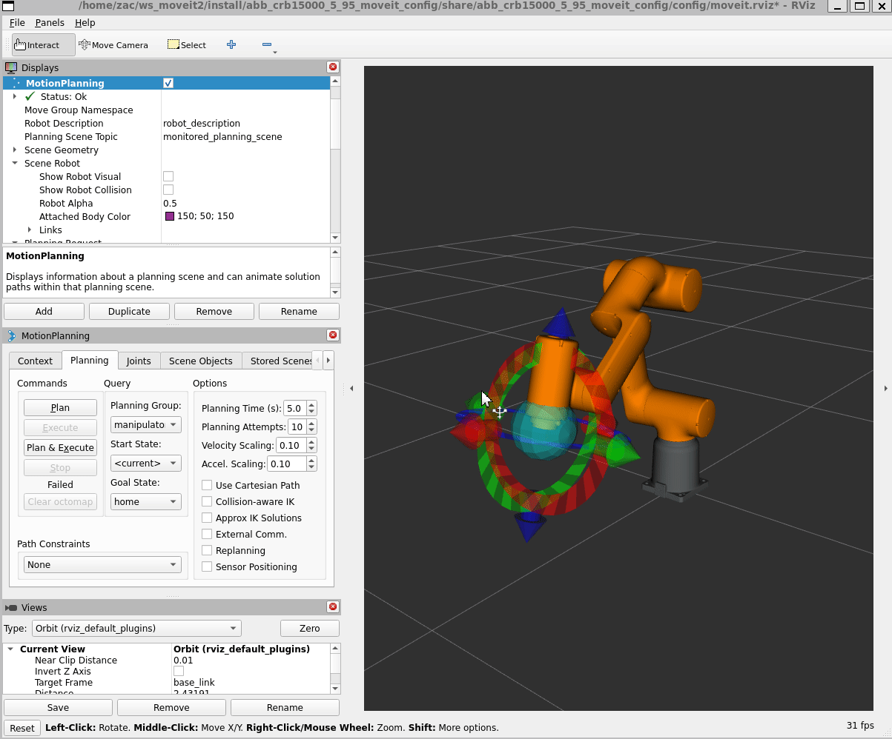
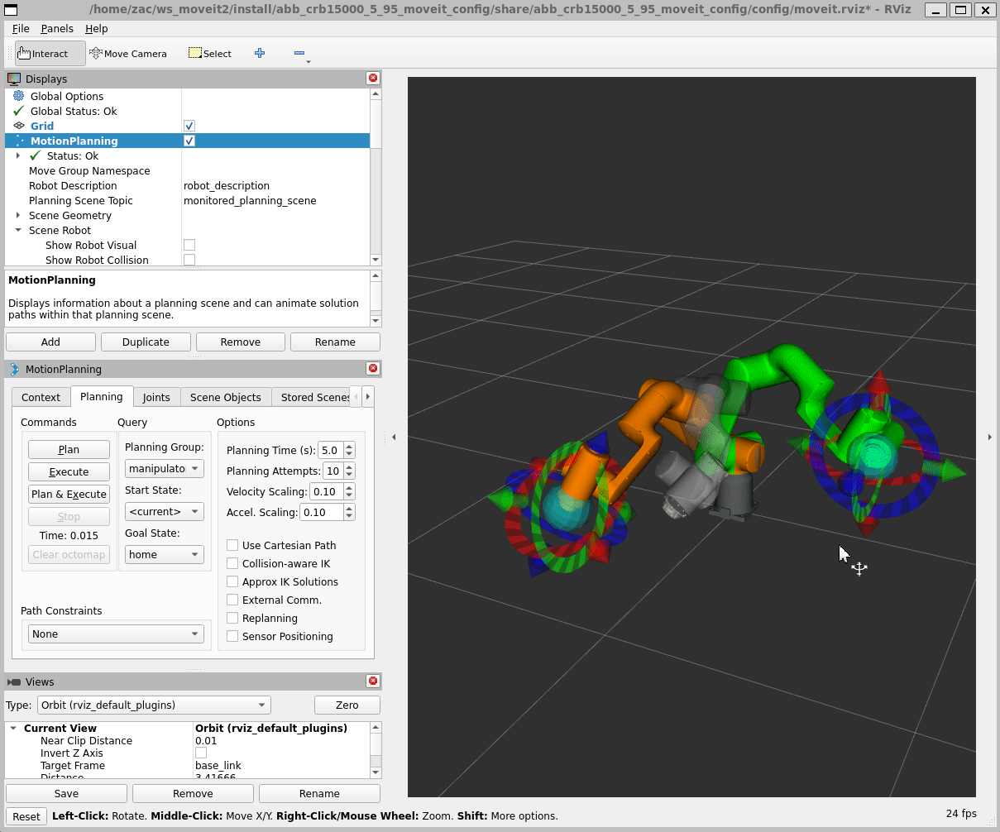
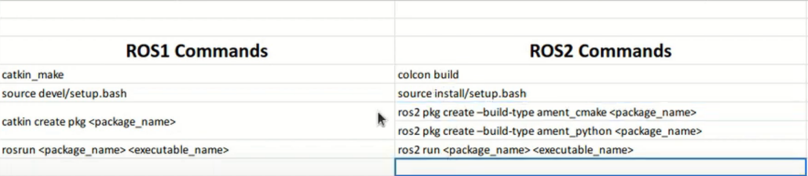
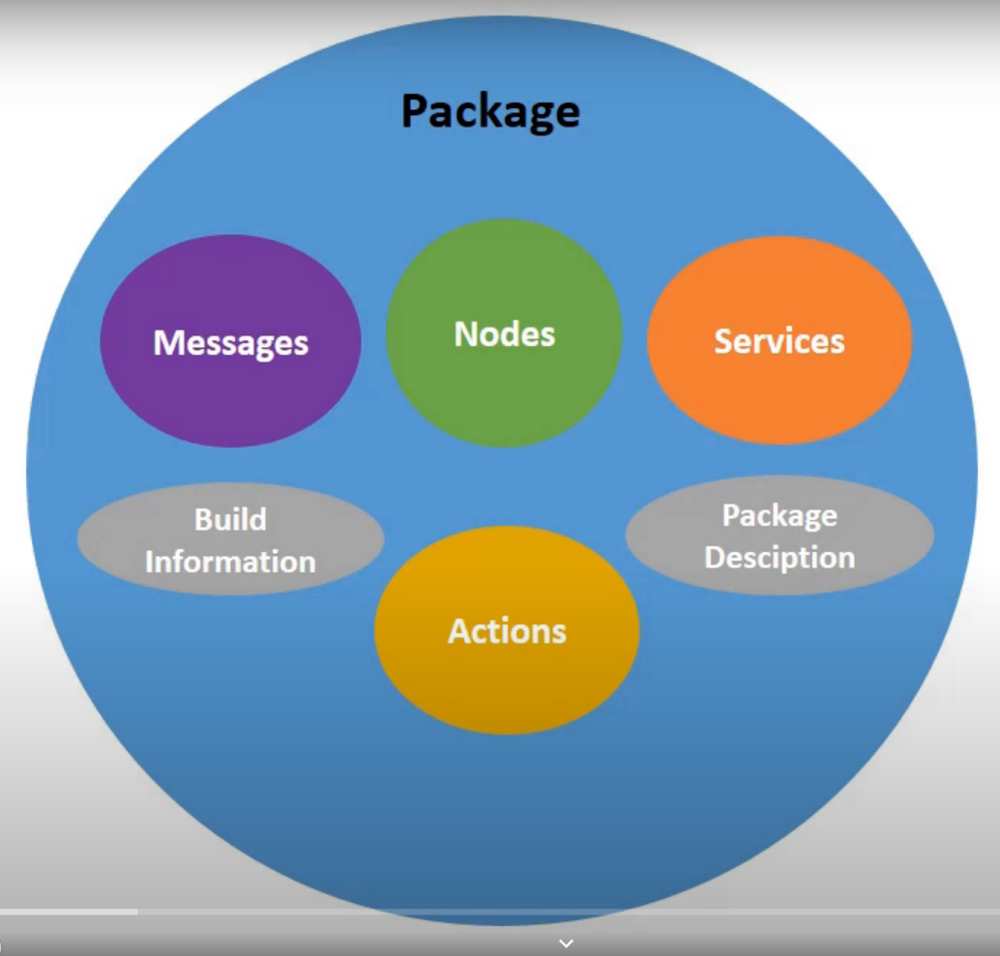
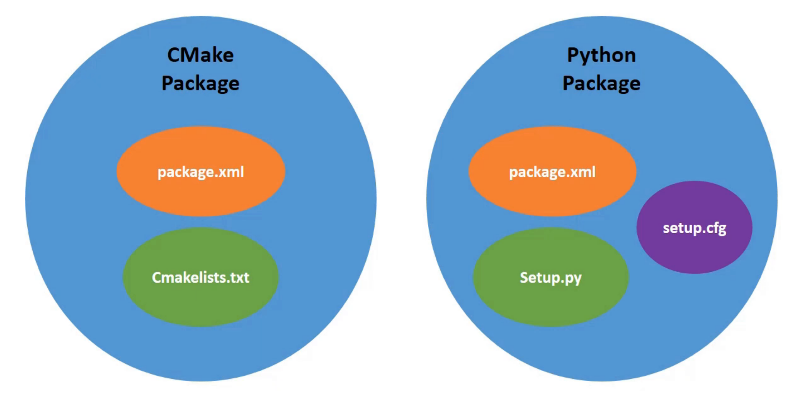

 
from launch import LaunchDescription
from launch.actions import DeclareLaunchArgument
from launch_ros.actions import Node
def generate_launch_description():
model_args = DeclareLaunchArgument("model", default_value="$(find rfl_description)/urdf/rfl.urdf")
gui_args = DeclareLaunchArgument("gui", default_value="True")
rviz_args = DeclareLaunchArgument("rviz", default_value="$(find rfl_description)/rviz/urdf.rviz")
joint_state_publisher_node = Node(
package="joint_state_publisher",
executable="joint_state_publisher",
parameters=[{"robot_description": "$(find xacro)/xacro --inorder $(arg model)"}, {"use_gui": "$(arg gui)"}],
output="screen",
)
robot_state_publisher_node = Node(package="robot_state_publisher", executable="robot_state_publisher", output="screen")
rviz_node = Node(package="rviz2", executable="rviz2", arguments=["-d", "$(arg rviz2)"], output="screen")
return LaunchDescription([model_args, gui_args, rviz_args, joint_state_publisher_node, robot_state_publisher_node, rviz_node])
SRDF:Semantic Robot Description Format URDF:Unified Robot Description Format SRDF: URDF + semantic information XACRO: XML Macro
  
int main(int argc, char *argv[])
{
// Initialize ROS and create a node.
rclcpp::init(argc, argv);
auto const node = std::make_shared<rclcpp::Node>(
"hello_moveit",
rclcpp::NodeOptions().automatically_declare_parameters_from_overrides(true));
// Create a ROS logger
auto const logger = rclcpp::get_logger("hello_moveit");
// Next step goes here
printf("I am Zac\n\n I think I am good at programming.\n\n But C++ and ROS is really hard for me.\n\n I am trying my best to learn it.\n\n I hope I can do it well.\n\n-----------------------------\n\n");
// Shutdown ROS
char c;
do
{
printf("Press 'Enter' to continue\n");
c = getchar();
} while (c != '\n');
printf("Continue\n");
rclcpp::shutdown();
return 0;
}
#include <cstdio>
#include <memory>
#include <moveit/move_group_interface/move_group_interface.h>
int main(int argc, char *argv[])
{
// Initialize ROS and create a node.
rclcpp::init(argc, argv);
auto const node = std::make_shared<rclcpp::Node>(
"hello_moveit",
rclcpp::NodeOptions().automatically_declare_parameters_from_overrides(true));
// Create a ROS logger
auto const logger = rclcpp::get_logger("hello_moveit");
//! Next step goes here
using moveit::planning_interface::MoveGroupInterface;
auto move_group_interface = MoveGroupInterface(node, "panda_arm");
auto const target_pose = []
{
geometry_msgs::msg::Pose target_pose;
target_pose.position.x = 0.5;
target_pose.position.y = 0.0;
target_pose.position.z = 0.5;
target_pose.orientation.w = 1.0;
return target_pose;
}();
move_group_interface.setPoseTarget(target_pose);
auto const [success, plan] = [&move_group_interface]
{
moveit::planning_interface::MoveGroupInterface::Plan msg;
auto const ok = static_cast<bool>(move_group_interface.plan(msg));
return std::make_pair(ok, msg);
}();
// Execute the plan
if (success)
{
move_group_interface.execute(plan);
}
else
{
RCLCPP_ERROR(logger, "Planing failed!");
}
// Shut down ROS
rclcpp::shutdown();
return 0;
}
--- Growing, Growing, Brighter Everyday ! ---